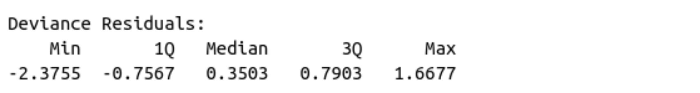

6 Logistic Regression
6.1 Load Packages and Data
Please load the following packages and data frames:
library(magrittr)
library(tidyverse)
url <- "http://www.phonetik.uni-muenchen.de/~jmh/lehre/Rdf"
ovowel <- read.table(file.path(url, "ovokal.txt")) %>% as_tibble() %>%
rename(vowel = Vokal, year = Jahr, subject = Vpn) %>%
mutate(vowel = ifelse(vowel == "hoch", "high", "low"))
pvp <- read.table(file.path(url, "pvp.txt")) %>% as_tibble() %>%
rename(response = Urteil)
sz <- read.table(file.path(url, "sz.txt")) %>% as_tibble() %>%
rename(fricative = Frikativ, dialect = Dialekt)6.2 From Linear to Logistic Regression
Logistic regression (just like linear regression) is a statistical test that examines whether a dependent variable is influenced by an independent factor. In contrast to the linear regression, the dependent variable in a logistic regression is always categorical and binary, while the independent variable can be either numeric (continuous) or categorical. Logistic regression allows us to estimate the probability of a particular value, assuming a relationship exists between the dependent and independent variables.
Examples:
- To what extent is the vocalization of a final /l/ in English (feel vs. ‘feeu’) influenced by dialect?
- Dependent variable: Vocalization (categorical with two levels: yes, no)
- Independent variable: Dialect (categorical with two or more levels)
- Is “passt” more likely to be produced with /ʃ/ in Augsburg compared to Munich?
- Dependent variable: Fricative (categorical with two levels: /s/, /ʃ/)
- Independent variable: Dialect (categorical with two levels: Augsburg, Munich)
- The vowel /a/ in /lam/ is synthesized with different durations and played back to listeners. Do the participants hear “lahm” (long /a:/) more often than “Lamm” (short /a/) as the vowel duration increases?
- Dependent variable: Vowel (categorical with two levels: /a/, /a:/)
- Independent variable: Duration (continuous)
Since the dependent variable in logistic regression is always a factor with two levels, these levels can also be coded as 1 and 0, and we can ask what the probability \(P\) is that the dependent variable \(y\) takes the value 1 based on the given data: \(P(y = 1)\). Similarly, we can ask for the probability \(Q\) that \(y\) takes the value 0: \(1 - P(y = 1)\). For the third example above, this would mean the following:
- \(P\): Probability that subjects hear “lahm” with increasing vowel duration (“success,” because based on our knowledge or previous findings, e.g., from other experiments, we assume that subjects should hear “lahm” with increasing vowel duration)
- \(Q\): Probability that subjects hear “Lamm” with increasing vowel duration (“failure,” because again, based on our previous knowledge of this phenomenon, we assume that it would be strange if subjects heard “Lamm” with increasing vowel duration)
The division (ratio) of \(P\) and \(Q\) is called the odds (probability of winning):
\(Odds = \frac{P(y = 1)}{1 - P(y = 1)} = \frac{P}{Q}\)
The odds of winning always lie within a range of 0 to infinity. One might consider simply using the odds as the dependent variable in a linear regression, since it’s no longer a categorical, binary dependent variable. The problem is that lm() doesn’t know that the odds can only take values from zero to infinity and would therefore also predict values outside this range. Furthermore, the ratio of \(P\) to \(Q\) says nothing about how many observations were used in calculating this ratio (the more observations, the more meaningful the calculated odds). So we need a function that transforms the odds into something that, firstly, falls within the range \(\pm\)infinity and, secondly, weights the proportions based on the number of observations. This function is generally called a link function and, in the case of logistic regression, is the logit transformation of the odds. The logit is the logarithm of the odds of winning and is therefore also referred to as log odds:
\(log(\frac{P}{Q})\)
6.2.1 An Example for \(P\), \(Q\), and Logit
Between 1950 and 2005, words like lost in an aristocratic form of English (Received Pronunciation) were increasingly produced low vowel /lɔst/ instead of with the high vowel /lost/. We have data in the ovowel data frame to support this hypothesis:
## # A tibble: 6 × 3
## year vowel subject
## <int> <chr> <chr>
## 1 1950 high S1
## 2 1950 high S2
## 3 1950 high S3
## 4 1950 high S4
## 5 1950 high S5
## 6 1950 high S6Our research question is: Is the pronunciation of the vowel (high vs. low = dependent variable) influenced by the year (1950…2005 = independent numerical variable)?
We want to calculate \(P\) (the probability that the vowel was low) and \(Q\) (the probability that the vowel was high) for each year. Based on our current understanding, the direction of change in the pronunciation of the vowel is from high to low, so we define it as “success” if the vowel was produced low and as “failure” if it was produced high. As a first step in calculating \(P\) and \(Q\), we code low and high pronunciation as 1 and 0, respectively, as TRUE and FALSE:
## # A tibble: 6 × 5
## year vowel subject success failure
## <int> <chr> <chr> <lgl> <lgl>
## 1 1950 high S1 FALSE TRUE
## 2 1950 high S2 FALSE TRUE
## 3 1950 high S3 FALSE TRUE
## 4 1950 high S4 FALSE TRUE
## 5 1950 high S5 FALSE TRUE
## 6 1950 high S6 FALSE TRUEThen we take the first year, 1950, and calculate \(P\) and \(Q\) by counting how many “successes” and “failures” we have for that year:
## [1] 5## [1] 30This means that in 1950, the vowel /o/ in words like lost was only produced 5 times as a low vowel, but 30 times as a high vowel. We would have to do this for every level of the independent variable (for every year)… But that would be very cumbersome. So we group the data frame by year:
## # A tibble: 6 × 3
## year P Q
## <int> <int> <int>
## 1 1950 5 30
## 2 1960 21 18
## 3 1971 26 15
## 4 1980 20 13
## 5 1993 32 4
## 6 2005 34 2Using \(P\) and \(Q\) we can now calculate the log odds (the logit):
## # A tibble: 6 × 4
## year P Q log_odds
## <int> <int> <int> <dbl>
## 1 1950 5 30 -1.79
## 2 1960 21 18 0.154
## 3 1971 26 15 0.550
## 4 1980 20 13 0.431
## 5 1993 32 4 2.08
## 6 2005 34 2 2.83Let’s look at the distribution of log odds over the decades:

It is these log odds that we will use to construct a regression line using logistic regression. This regression line is defined in the same way as the linear regression line, but it estimates the log odds:
\(log(\frac{P}{Q}) = bx + k\)
Once again,
- \(b\) is the slope
- \(x\) is a value on the x-axis
- \(k\) is the y-intercept
Here, however, we cannot calculate \(b\) and \(k\) as easily as in linear regression; that is, we have them estimated directly.
6.2.2 The Logistic Regression Line
For linear regression, we estimated the regression coefficients using the lm() function, which employs the least squares method. The logistic regression line, on the other hand, is approximated using the maximum likelihood method, which ensures that the estimated data points of the logistic model are as close as possible to the actual values. To estimate the regression coefficients, we use the function glm(), which stands for Generalized Linear Model. In addition to the formula y ~ x and the data frame, the function receives the argument family = binomial, which tells the function to perform the logit transformation. The dependent variable must be a factor; if necessary, you must convert the variable into a factor using as.factor():
## [1] "character"We’ll look at the summary of this model later. First, we’ll show an alternative to the above application of glm() to the original data frame. glm() can also be executed on \(P\) and \(Q\) from the combined data frame df by concatenating \(P\) and \(Q\) using cbind() and using them as dependent variables:
We can use coef() to display the regression coefficients:
## (Intercept) year
## -138.11742 0.07026## (Intercept) year
## -138.11742 0.07026Using these parameters, the straight regression line can be superimposed onto the data in the logit space with either geom_smooth() (which receives method = "glm" as an argument) or geom_abline() (with the estimated coefs).
# with geom_smooth():
ggplot(df) +
aes(x = year, y = log_odds) +
geom_point() +
geom_smooth(method = "glm", se = F)## `geom_smooth()` using formula = 'y ~ x'
# with geom_abline():
ggplot(df) +
aes(x = year, y = log_odds) +
geom_point() +
geom_abline(intercept = coefs[1], slope = coefs[2], color = "blue")
The values estimated by logistic regression are the log odds. We can again use the predict() function to display the estimated log odds:
## 1 2 3 4 5 6
## -1.1043 -1.1043 -1.1043 -1.1043 -1.1043 -1.1043
## 7 8 9 10 11 12
## -1.1043 -1.1043 -1.1043 -1.1043 -1.1043 -1.1043
## 13 14 15 16 17 18
## -1.1043 -1.1043 -1.1043 -1.1043 -1.1043 -1.1043
## 19 20 21 22 23 24
## -1.1043 -1.1043 -1.1043 -1.1043 -1.1043 -1.1043
## 25 26 27 28 29 30
## -1.1043 -1.1043 -1.1043 -1.1043 -1.1043 -1.1043
## 31 32 33 34 35 36
## -1.1043 -1.1043 -1.1043 -1.1043 -1.1043 -0.4017
## 37 38 39 40 41 42
## -0.4017 -0.4017 -0.4017 -0.4017 -0.4017 -0.4017
## 43 44 45 46 47 48
## -0.4017 -0.4017 -0.4017 -0.4017 -0.4017 -0.4017
## 49 50 51 52 53 54
## -0.4017 -0.4017 -0.4017 -0.4017 -0.4017 -0.4017
## 55 56 57 58 59 60
## -0.4017 -0.4017 -0.4017 -0.4017 -0.4017 -0.4017
## 61 62 63 64 65 66
## -0.4017 -0.4017 -0.4017 -0.4017 -0.4017 -0.4017
## 67 68 69 70 71 72
## -0.4017 -0.4017 -0.4017 -0.4017 -0.4017 -0.4017
## 73 74 75 76 77 78
## -0.4017 -0.4017 0.3712 0.3712 0.3712 0.3712
## 79 80 81 82 83 84
## 0.3712 0.3712 0.3712 0.3712 0.3712 0.3712
## 85 86 87 88 89 90
## 0.3712 0.3712 0.3712 0.3712 0.3712 0.3712
## 91 92 93 94 95 96
## 0.3712 0.3712 0.3712 0.3712 0.3712 0.3712
## 97 98 99 100 101 102
## 0.3712 0.3712 0.3712 0.3712 0.3712 0.3712
## 103 104 105 106 107 108
## 0.3712 0.3712 0.3712 0.3712 0.3712 0.3712
## 109 110 111 112 113 114
## 0.3712 0.3712 0.3712 0.3712 0.3712 0.3712
## 115 116 117 118 119 120
## 0.3712 1.0036 1.0036 1.0036 1.0036 1.0036
## 121 122 123 124 125 126
## 1.0036 1.0036 1.0036 1.0036 1.0036 1.0036
## 127 128 129 130 131 132
## 1.0036 1.0036 1.0036 1.0036 1.0036 1.0036
## 133 134 135 136 137 138
## 1.0036 1.0036 1.0036 1.0036 1.0036 1.0036
## 139 140 141 142 143 144
## 1.0036 1.0036 1.0036 1.0036 1.0036 1.0036
## 145 146 147 148 149 150
## 1.0036 1.0036 1.0036 1.0036 1.9170 1.9170
## 151 152 153 154 155 156
## 1.9170 1.9170 1.9170 1.9170 1.9170 1.9170
## 157 158 159 160 161 162
## 1.9170 1.9170 1.9170 1.9170 1.9170 1.9170
## 163 164 165 166 167 168
## 1.9170 1.9170 1.9170 1.9170 1.9170 1.9170
## 169 170 171 172 173 174
## 1.9170 1.9170 1.9170 1.9170 1.9170 1.9170
## 175 176 177 178 179 180
## 1.9170 1.9170 1.9170 1.9170 1.9170 1.9170
## 181 182 183 184 185 186
## 1.9170 1.9170 1.9170 1.9170 2.7601 2.7601
## 187 188 189 190 191 192
## 2.7601 2.7601 2.7601 2.7601 2.7601 2.7601
## 193 194 195 196 197 198
## 2.7601 2.7601 2.7601 2.7601 2.7601 2.7601
## 199 200 201 202 203 204
## 2.7601 2.7601 2.7601 2.7601 2.7601 2.7601
## 205 206 207 208 209 210
## 2.7601 2.7601 2.7601 2.7601 2.7601 2.7601
## 211 212 213 214 215 216
## 2.7601 2.7601 2.7601 2.7601 2.7601 2.7601
## 217 218 219 220
## 2.7601 2.7601 2.7601 2.7601The output of predict() in this case consists of 220 numbers, one number per row in the original data frame ovowel. As you can see, the estimated log odds are repeated. This is because one log odd value is calculated for each level (or value) of the independent variable; in this case, there are six unique log odd values, one for each year:
## [1] -1.1043 -0.4017 0.3712 1.0036 1.9170 2.7601We can plot these predicted values in red on our plot from above and find that the predicted values lie exactly on the regression line (we use geom_abline() here):
ggplot(df) +
aes(x = year, y = log_odds) +
geom_point() +
geom_abline(intercept = coefs[1], slope = coefs[2], color = "blue") +
geom_point(data = data.frame(x = unique(ovowel$year), y = unique(log_odds_estimate)),
mapping = aes(x, y),
color = "red")
Just like with linear regression, we can also use predict() to predict the log odds values for x-values that are not present in the original dataset. For example, if we want to estimate the logit values for the years 2000 to 2020, it works as follows:
## 1 2 3 4 5 6 7 8 9
## 2.409 2.479 2.549 2.620 2.690 2.760 2.830 2.901 2.971
## 10 11 12 13 14 15 16 17 18
## 3.041 3.111 3.182 3.252 3.322 3.393 3.463 3.533 3.603
## 19 20 21
## 3.674 3.744 3.8146.2.3 Regression with glm()
The result of the function glm() is an object of the classes “glm” and “lm”:
## [1] "glm" "lm"We apply the summary() function to the result of the logistic regression lreg and look at the result again line by line:
##
## Call:
## glm(formula = as.factor(vowel) ~ year, family = binomial, data = ovowel)
##
## Coefficients:
## Estimate Std. Error z value Pr(>|z|)
## (Intercept) -138.1174 20.9988 -6.58 4.8e-11 ***
## year 0.0703 0.0107 6.59 4.3e-11 ***
## ---
## Signif. codes:
## 0 '***' 0.001 '**' 0.01 '*' 0.05 '.' 0.1 ' ' 1
##
## (Dispersion parameter for binomial family taken to be 1)
##
## Null deviance: 290.57 on 219 degrees of freedom
## Residual deviance: 229.45 on 218 degrees of freedom
## AIC: 233.5
##
## Number of Fisher Scoring iterations: 4The summary begins again with the call, i.e., the function that was used.
6.2.3.1 Coefficients
The table of regression coefficients follows:

The first row of this table contains the values for the intercept, the second for slope. The first column again shows the estimates for the regression coefficients, which were determined using a maximum likelihood method. The second column shows the standard error, which describes how reliable the estimates are (the smaller the better). A Wald test was performed on the two estimates, which checks whether the estimates differ significantly from zero. The result of this test is the \(z\)-value, which can also be calculated by dividing the estimate by the standard error. We are particularly interested in the second row, whose \(z\)-value and \(p\)-value show whether the independent variable year contributes significantly to explaining the log odds values. If the \(p\)-value, which is in the fourth column, is less than 0.05 (see also the significance level asterisks), then the coefficient differs significantly from zero. In the case of the dependent variable, we see that the \(p\)-value is less than 0.001, i.e., the variable is a good predictor for the log odds.
By default, a statement about the dispersion parameter is printed after the coefficients table. We can ignore this.
6.2.3.2 Deviances and AIC
The following two lines contain the null deviance and the residual deviance as well as the AIC (Akaike Information Criterion):

The null deviance describes how well a model without independent variables would explain the data. A model without independent variables is characterized solely by the intercept. On its own, the null deviance is difficult to interpret. Therefore, the residual deviance is listed directly below it, describing how well our full model explains the data. The difference between null and residual deviance reveals how helpful our independent variable is in the model. The degrees of freedom are calculated by subtracting the number of parameters in the model from the number of observations in the data frame. With null deviance, there is only one parameter (the intercept), while with residual deviance, there are two (the intercept and the independent variable). The smaller the deviations (i.e., the discrepancies between the actual and the estimated values), the better.
AIC stands for Akaike Information Criterion and is particularly helpful when comparing different regression models for the same dataset (for example, if you were to calculate another model with more than one independent variable for ovowel). The smaller the AIC, the better the model describes the variance in the data. Since we only have the one model here, AIC is irrelevant for our purposes.
6.2.3.3 Fisher Scoring Iterations
In logistic regression, an iterative algorithm calculates the regression parameters, and the Fisher scoring iterations indicate how many iterations were required. This is also irrelevant for our purposes.

6.2.3.4 Deviance Residuals
The deviance residuals are the differences between the empirically observed and estimated values. They are not shown in the result of the logistic regression, but we can look at them using resid() and compute the usual summary statistics for them with summary():
## Min. 1st Qu. Median Mean 3rd Qu. Max.
## -2.3755 -0.7566 0.3503 0.0586 0.7903 1.66776.2.4 The \(\chi^2\)-Test & Reporting Results
For the linear regression, the \(F\)-test was our test statistic. Instead, we perform a \(\chi^2\)-test for the logistic regression, which checks whether our model is a better fit for our data than an intercept-only model. You already know this test from the mixed models; it compares to models to each other. Since we already saw in the coefficients table above that the Wald test was significant for our independent variable, it is likely that our full model is better than a model without independent variables. We once again use the anova() function for this:
## Analysis of Deviance Table
##
## Model: binomial, link: logit
##
## Response: as.factor(vowel)
##
## Terms added sequentially (first to last)
##
##
## Df Deviance Resid. Df Resid. Dev Pr(>Chi)
## NULL 219 291
## year 1 61.1 218 230 5.4e-15 ***
## ---
## Signif. codes:
## 0 '***' 0.001 '**' 0.01 '*' 0.05 '.' 0.1 ' ' 1The result of the \(\chi^2\)-test has two rows: one for the null model (intercept-only) and the other for the model with the independent variable year. The degrees of freedom for null and residual deviation, which are reported in the column Resid. Dev., are found in the column Resid. Df. These values were reported in abbreviated form in the summary of the logistic model. From the \(\chi^2\)-test result, we are particularly interested in the value in the column Pr(>Chi), which contains the \(p\)-value. If this value is less than 0.05 (see also the significance asterisks), then the model with the variable year is a better fit for the data than the null model.
Our initial research question was: Is the pronunciation of the vowel (high vs. low) influenced by the year?
We can now report: Year had a significant influence on the proportion of ‘lost’ with low/high vowel (\(\chi^2\)[1] = 61.1, \(p\) < 0.001).
6.3 The Sigmoid Function and Tipping Point
We presented the results of a logistic regression above in the logit space. However, one can also use the y-intercept and the slope to plot proportions on the y-axis instead of log odds. In this case, the regression line is no longer straight, but sigmoidal (S-shaped). The formula for the sigmoid function is:
\(f(x) = \frac{e^{bx+k}}{1 + e^{bx+k}}\)
In this formula, \(e\) is the exponential function, \(b\) and \(k\) are the slope and the intercept, respectively. The larger the slope \(b\) is (in the figure: 1, 0.5, 0.25), the steeper the sigmoid curve (black, red, green) becomes:

When the slope is zero, the y-axis is a straight line with a y-value of 0.5. Changing the y-intercept \(k\) (0, 1, -1 in the plot) when the slope is \(b = 0\) shifts the straight horizontal line up or down (black, red, green):

6.3.1 The Tipping Point
The tipping point is the point at which the sigmoid curve is steepest. At this point, the value on the y-axis (the proportion) is always 0.5 (shown below as a horizontal line). The x-value of the tipping point is calculated using \(\frac{-k}{b}\). For \(k = 4\) and \(b = 0.8\), for example, this would be \(-4/0.8 = -5\) (dashed line):

6.3.2 Plotting Proportions
For our example above, we now want to plot proportions and then fit a sigmoidal regression curve to our data. We take our aggregated data frame df and calculate the proportion of \(P\) (the proportion of “successes”) per year:
## # A tibble: 6 × 5
## year P Q log_odds proportions
## <int> <int> <int> <dbl> <dbl>
## 1 1950 5 30 -1.79 0.143
## 2 1960 21 18 0.154 0.538
## 3 1971 26 15 0.550 0.634
## 4 1980 20 13 0.431 0.606
## 5 1993 32 4 2.08 0.889
## 6 2005 34 2 2.83 0.944For the year 1950, the proportion of “successes” (where the vowel /o/ was produced low) is 14.3%, for the year 1960 it is already 53.8%, and so on. We can now plot these proportions stored in the newly created column df$proportions and then use geom_smooth() to draw a sigmoidal regression line through the data. To this end, we use the arguments method = "glm" (generalized linear model), se = F (don’t show standard error), and additionally method.args = list(family = "quasibinomial") so that the function knows that we’re plotting proportions.
ggplot(df) +
aes(x = year, y = proportions) +
geom_point() +
geom_smooth(method = "glm", se = F,
method.args = list(family = "quasibinomial"))## `geom_smooth()` using formula = 'y ~ x'
In this plot, the complete “S” of the sigmoidal curve is not visible because our x-axis is limited. However, we can easily calculate further proportion values using predict(). As we saw earlier, predict() returns the log odds, not the proportions. We obtain the proportions by using the argument type = "response" in predict():
## 1 2 3 4 5 6 7
## 0.2489 0.2489 0.2489 0.2489 0.2489 0.2489 0.2489
## 8 9 10 11 12 13 14
## 0.2489 0.2489 0.2489 0.2489 0.2489 0.2489 0.2489
## 15 16 17 18 19 20 21
## 0.2489 0.2489 0.2489 0.2489 0.2489 0.2489 0.2489
## 22 23 24 25 26 27 28
## 0.2489 0.2489 0.2489 0.2489 0.2489 0.2489 0.2489
## 29 30 31 32 33 34 35
## 0.2489 0.2489 0.2489 0.2489 0.2489 0.2489 0.2489
## 36 37 38 39 40 41 42
## 0.4009 0.4009 0.4009 0.4009 0.4009 0.4009 0.4009
## 43 44 45 46 47 48 49
## 0.4009 0.4009 0.4009 0.4009 0.4009 0.4009 0.4009
## 50 51 52 53 54 55 56
## 0.4009 0.4009 0.4009 0.4009 0.4009 0.4009 0.4009
## 57 58 59 60 61 62 63
## 0.4009 0.4009 0.4009 0.4009 0.4009 0.4009 0.4009
## 64 65 66 67 68 69 70
## 0.4009 0.4009 0.4009 0.4009 0.4009 0.4009 0.4009
## 71 72 73 74 75 76 77
## 0.4009 0.4009 0.4009 0.4009 0.5917 0.5917 0.5917
## 78 79 80 81 82 83 84
## 0.5917 0.5917 0.5917 0.5917 0.5917 0.5917 0.5917
## 85 86 87 88 89 90 91
## 0.5917 0.5917 0.5917 0.5917 0.5917 0.5917 0.5917
## 92 93 94 95 96 97 98
## 0.5917 0.5917 0.5917 0.5917 0.5917 0.5917 0.5917
## 99 100 101 102 103 104 105
## 0.5917 0.5917 0.5917 0.5917 0.5917 0.5917 0.5917
## 106 107 108 109 110 111 112
## 0.5917 0.5917 0.5917 0.5917 0.5917 0.5917 0.5917
## 113 114 115 116 117 118 119
## 0.5917 0.5917 0.5917 0.7318 0.7318 0.7318 0.7318
## 120 121 122 123 124 125 126
## 0.7318 0.7318 0.7318 0.7318 0.7318 0.7318 0.7318
## 127 128 129 130 131 132 133
## 0.7318 0.7318 0.7318 0.7318 0.7318 0.7318 0.7318
## 134 135 136 137 138 139 140
## 0.7318 0.7318 0.7318 0.7318 0.7318 0.7318 0.7318
## 141 142 143 144 145 146 147
## 0.7318 0.7318 0.7318 0.7318 0.7318 0.7318 0.7318
## 148 149 150 151 152 153 154
## 0.7318 0.8718 0.8718 0.8718 0.8718 0.8718 0.8718
## 155 156 157 158 159 160 161
## 0.8718 0.8718 0.8718 0.8718 0.8718 0.8718 0.8718
## 162 163 164 165 166 167 168
## 0.8718 0.8718 0.8718 0.8718 0.8718 0.8718 0.8718
## 169 170 171 172 173 174 175
## 0.8718 0.8718 0.8718 0.8718 0.8718 0.8718 0.8718
## 176 177 178 179 180 181 182
## 0.8718 0.8718 0.8718 0.8718 0.8718 0.8718 0.8718
## 183 184 185 186 187 188 189
## 0.8718 0.8718 0.9405 0.9405 0.9405 0.9405 0.9405
## 190 191 192 193 194 195 196
## 0.9405 0.9405 0.9405 0.9405 0.9405 0.9405 0.9405
## 197 198 199 200 201 202 203
## 0.9405 0.9405 0.9405 0.9405 0.9405 0.9405 0.9405
## 204 205 206 207 208 209 210
## 0.9405 0.9405 0.9405 0.9405 0.9405 0.9405 0.9405
## 211 212 213 214 215 216 217
## 0.9405 0.9405 0.9405 0.9405 0.9405 0.9405 0.9405
## 218 219 220
## 0.9405 0.9405 0.9405These are now the estimated values for all 220 observations in the original data frame. We now want some estimates for the years before 1950 and after 2010. So we also give the predict() function a data frame with the desired years:
more_props <- predict(lreg,
data.frame(year = c(1910, 1920, 1930, 1940, 2020, 2030)),
type = "response")
more_props## 1 2 3 4 5 6
## 0.01955 0.03871 0.07519 0.14101 0.97842 0.98919We will now create a data frame containing only the year and proportions, using the original data frame and the values just estimated:
df_new <- data.frame(year = c(df$year, 1910, 1920, 1930, 1940, 2020, 2030),
proportions = c(df$proportions, more_props))
ggplot(df_new) +
aes(x = year, y = proportions) +
geom_point() +
geom_smooth(method = "glm", se = F,
method.args = list(family = "quasibinomial"))## `geom_smooth()` using formula = 'y ~ x'
We can also calculate the tipping point for this data, using the coefs already stored above:
## (Intercept)
## 1966According to our model, the year in which the pronunciation of /o/ in the Received Pronunciation changes from “high” to “low” is approximately 1965.
6.4 Tipping Points in Perceptual Studies
Tipping points are frequently used in perception tests, which are constructed as follows: We synthesized an 11-step continuum between /pUp/ and /pYp/. Phonetically, the difference between /U/ and /Y/ is the second formant, which is low for /U/ and high for /Y/. We gradually varied this F2 value in the continuum over 11 steps. The first and last tokens in this continuum sound very clearly like PUPP or PÜPP, but in between, it can be difficult for listeners to distinguish between PUPP and PÜPP. Each token from the continuum was then played to several German participants in randomized order, and the participant had to decide whether it was PUPP or PÜPP. We are interested to find out at which F2 value the participants’ perception switches from PUPP to PÜPP. In other words, we are interested in the tipping point.
We have stored data from such a perception experiment in the data frame pvp:
## # A tibble: 6 × 3
## Vpn F2 response
## <chr> <int> <chr>
## 1 VP18 1239 Y
## 2 VP18 1088 Y
## 3 VP18 803 U
## 4 VP18 956 U
## 5 VP18 1328 Y
## 6 VP18 861 U## [1] "Y" "U"## [1] 1239 1088 803 956 1328 861 989 1121 808 1310
## [11] 1436We expect that, with increasing F2 levels, subjects will be more likely to hear /Y/ than /U/, so we code the response /Y/ as success and /U/ as failure:
## # A tibble: 6 × 5
## Vpn F2 response success failure
## <chr> <int> <chr> <lgl> <lgl>
## 1 VP18 1239 Y TRUE FALSE
## 2 VP18 1088 Y TRUE FALSE
## 3 VP18 803 U FALSE TRUE
## 4 VP18 956 U FALSE TRUE
## 5 VP18 1328 Y TRUE FALSE
## 6 VP18 861 U FALSE TRUEFor the steps of the F2 continuum, we calculate \(P\) and \(Q\):
## # A tibble: 11 × 3
## F2 P Q
## <int> <int> <int>
## 1 803 0 10
## 2 808 0 10
## 3 861 0 10
## 4 956 0 10
## 5 989 0 10
## 6 1088 2 8
## 7 1121 4 6
## 8 1239 9 1
## 9 1310 9 1
## 10 1328 10 0
## 11 1436 10 0We then calculate the proportions of \(P\) and \(Q\) and plot the sigmoidal regression line in the data:
## # A tibble: 11 × 4
## F2 P Q proportions
## <int> <int> <int> <dbl>
## 1 803 0 10 0
## 2 808 0 10 0
## 3 861 0 10 0
## 4 956 0 10 0
## 5 989 0 10 0
## 6 1088 2 8 0.2
## 7 1121 4 6 0.4
## 8 1239 9 1 0.9
## 9 1310 9 1 0.9
## 10 1328 10 0 1
## 11 1436 10 0 1ggplot(df) +
aes(x = F2, y = proportions) +
geom_point() +
geom_smooth(method = "glm", se = F,
method.args = list(family = "quasibinomial"))## `geom_smooth()` using formula = 'y ~ x'
To determine the tipping point of this sigmoid curve, we calculate the Generalized Linear Model:
Using the estimated regression coefficients, we can now calculate the subjects’ perceptual tipping point:
## (Intercept)
## 1151This means that above an F2 value of approximately 1151 Hz, the test subjects hear “PÜPP” rather than “PUPP”.
Finally, we want to determine whether the test subjects’ judgments were actually influenced by F2. For this, we use the \(\chi^2\)-test.
## Analysis of Deviance Table
##
## Model: binomial, link: logit
##
## Response: as.factor(response)
##
## Terms added sequentially (first to last)
##
##
## Df Deviance Resid. Df Resid. Dev Pr(>Chi)
## NULL 109 148.1
## F2 1 109 108 39.1 <2e-16 ***
## ---
## Signif. codes:
## 0 '***' 0.001 '**' 0.01 '*' 0.05 '.' 0.1 ' ' 1We report: The proportion of pUp/pYp responses was significantly influenced by F2 (\(\chi^2\)[1] = 109.0, \(p\) < 0.001).
6.5 Categorical Independent Factor
The logistic regression can be used in a similar way when the independent variable is categorical. The key difference is that no tipping point needs to be calculated and no sigmoid needs to be plotted.
In the data frame sz, we stored information about how 20 participants pronounced the word “Sonne” (sun): either with an initial [s] (voiceless) or an initial [z] (voiced). Of the 20 participants, 9 came from Bavaria and 11 from Schleswig-Holstein:
## # A tibble: 6 × 3
## fricative dialect Vpn
## <chr> <chr> <chr>
## 1 z SH S1
## 2 z SH S2
## 3 z SH S3
## 4 z SH S4
## 5 s SH S5
## 6 s SH S6Our question is: Is voicing (two levels: s, z) influenced by dialect (two levels: BY, SH)?
Since both variables are categorical in this case, we can create a bar plot to get an idea of the data:

It appears that the initial fricative is produced significantly more often voiceless in Bavaria than in Schleswig-Holstein. Now, as before, we apply a logistic regression followed by a \(\chi^2\)-test to the data:
sz.glm <- glm(as.factor(fricative) ~ dialect, family = binomial, data = sz)
anova(sz.glm, test = "Chisq")## Analysis of Deviance Table
##
## Model: binomial, link: logit
##
## Response: as.factor(fricative)
##
## Terms added sequentially (first to last)
##
##
## Df Deviance Resid. Df Resid. Dev Pr(>Chi)
## NULL 19 27.7
## dialect 1 5.3 18 22.4 0.021 *
## ---
## Signif. codes:
## 0 '***' 0.001 '**' 0.01 '*' 0.05 '.' 0.1 ' ' 1The \(\chi^2\)-test shows: The distribution of voiced and voiceless /s/ in words like Sonne was significantly influenced by dialect (\(\chi^2\)[1] = 5.3, \(p\) < 0.05).